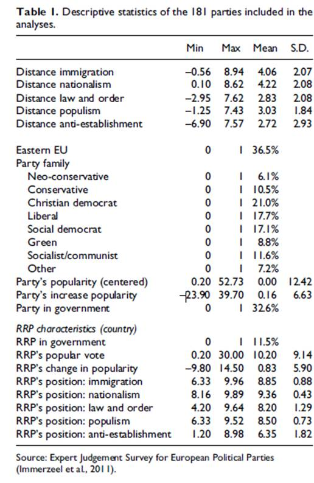

收录于合集
#政治态度 13 个
#比较政治学 121 个

Immerzeel, T., M. Lubbers, and H. Coffe.“Competing with the radical right: Distances between the European radicalright and other parties on typical radical right issues”, Party Politics , Vol. 22, No 6, 2016,pp.823–834
作者简介
Tim Immerzeel 荷兰阿姆斯特丹自由大学社会学系博士后研究员，国际PolPart项目成员，研究方向为政治参与、选举行为和极右翼政党。
Marcel Lubbers 荷兰拉德堡德大学大学社会学系副教授，研究方向为族群关系与态度、疑欧主义和民族文化。
Hilde Coffé 新西兰惠灵顿维多利亚大学政治科学与国际关系项目高级讲师，研究方向为公众态度、政治行为和比较政治。
随着欧洲极右翼政党的不断发展，探究其崛起原因的文献也越来越多，但直到最近学者才开始系统地分析极右翼政党崛起的政策后果。部分学者指出，极右翼政党的崛起很可能会影响其他政党在移民等问题上的政策。那么事实果真如此吗？在来自极右翼政党的选举压力面前，其他政党是随波逐流地右倾极化，还是旗帜鲜明地坚守阵地，抑或逆流而上地抗击极右？为了回答这个问题，Immerzeel等人在这篇文章中创造性地全面测量了其他政党与极右翼政党在诸多典型议题上的政策距离，同时尝试探索和检验了影响政策距离的诸多因素。
一、 理论基础
经典的空间竞争理论（spatial competition theories）认为，在面对新的挑战者时，传统政党可能会做出两种截然不同的选择。一方面，传统政党可能会选择政策趋异，积极增加与挑战者的政策距离，旗帜鲜明地鼓动支持者来反对挑战者。另一方面，传统政党也可能会选择政策趋同，主动减少与挑战者的政策距离，用相似的政策来分走挑战者的选票。一般认为，极右翼政党在政治光谱上与传统右翼政党较为接近，因此传统右翼政党受到的竞争威胁更大，所以传统右翼政党会倾向于减少与极右翼政党的政策距离来挽回选票，这种情况在历史上也多次发生。与之相反，传统左翼政党与极右翼政党的共性较少，受到的竞争威胁也较小，因此倾向于和极右翼政党保持距离。在此基础上，Immerzeel等人提出：在移民、民族主义、法律秩序等典型议题上，右翼政党与极右翼政党的政策距离小于左翼政党与极右翼政党的政策距离 （假设1） 。然而，也有部分学者指出，传统左翼政党和极右翼政党都极力争取工薪阶层等底层人民的支持。因此传统左翼政党也受到了严重的竞争威胁，也倾向于缩小与极右翼政党的政策距离。在此基础上，作者提出：在移民、民族主义、法律秩序等典型议题上，左、右翼政党与极右翼政党的政策距离是相当的 （假设1A） 。
许多学者注意到，从发展历史和组织形态来说，绿党和社会主义政党在一定程度上与极右翼政党较为相似，而与其他主流政党截然不同。在此基础上，作者提出：在反建制主义、民粹主义等典型议题上，绿党、社会主义政党与极右翼政党的政策距离小于主流政党与极右翼政党的政策距离 （假设2） 。也有研究指出，小型政党更倾向于保持自己的特色，而不是适应需求来争取更多选票。在此基础上，作者提出：其他政党获得的选票越少，其与极右翼政党的政策距离就越大 （假设3） 。类似的，经验证据表明，执政党的政策较为固定，政策转变的风险较大，因此执政党很少向极右翼政党靠拢。在此基础上，作者提出：在野党与极右翼政党的政策距离小于执政党与极右翼政党的政策距离 （假设4） 。还有部分学者指出，各国极右翼政党的不同属性也会影响其他政党与它们的政策距离。通过梳理归纳，作者提出：极右翼政党获得的选票越多，其他政党与极右翼政党的政策距离越小 （假设5） ；当极右翼政党入阁或支持政府时，其他政党与极右翼政党的政策距离就会变小 （假设6） 。
二、研究方法
由于政策问题难以概念操作化，因此Immerzeel等人并未选择直接测量，而是采取了较为特殊的专家问卷调查法。作者向33个欧洲国家的2130名政治科学家和政治社会学家寄送了调查问卷，邀请他们从移民、民族主义、法律秩序、民粹主义、反建制主义等方面对所在国主要政党进行0-10分的评价(分数越高，表示越“极右”)，以此获得其他政党与极右翼政党的政策距离。成功回收的问卷约占40%。通过因子分析，作者发现移民、民族主义、法律秩序大致可以视为一个维度，而反建制主义则明显地处于另一个维度，民族主义则在两个维度上都有效应。根据经验，作者将第一个维度视为意识形态，第二个维度视为政治风格。
在本文中，作者将其他政党与极右翼真的的政策距离视为被解释变量，将极右翼政党和其他政党各自的属性作为解释变量。作者对于极右翼政党的定义主要参考Mudde等人的研究，而对其他政党的分类则沿袭Ennser等人的传统。在此基础上，作者将其他政党分为新保守主义政党、保守主义政党、基督教民主党、自由党、社会民主党、绿党、社会主义/共产主义政党和其他共八个类型。此外，作者还同时对极右翼政党和其他政党引入了是否为执政党、政党支持率现状、政党支持率变化等变量。
三、 数据分析

四、结果解读
根据描述性统计与回归分析的结果，作者指出:
1.在意识形态议题（移民、民族主义、法律秩序）上，社会主义政党与极右翼政党的政策距离最大，其次是绿党和社会民主党。相比之下传统右翼政党整体与极右翼政党更为接近。
2.在反建制主义方面，新保守主义政党、社会主义政党和绿党明显比其他政党更为接近极右翼政党，各政党与极右翼政党的政策距离随着政治光谱的从左到右呈倒U型曲线。
3.得票越多的政党与极右翼政党的政策距离越小，吸纳极右翼政党的典型议题有助于其他政党的选举成功。
4.极右翼政党是否入阁对其他政党与其政策距离的影响较小。极右翼政党的支持率上升很可能导致西欧其他政党在移民和法律秩序议题上向其靠拢，但这一效应在东欧则不明显。
5.其他政党与极右翼政党的政策距离主要还是由其自身传统、定位与支持率有关，极右翼政党的选举表现总体上对政策距离影响微弱。
6.东欧国家的政党总体上更靠近极右翼政党，这很可能是因为西欧极右翼政党更为激进和极端。